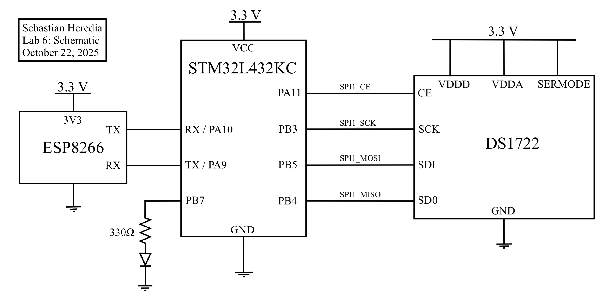
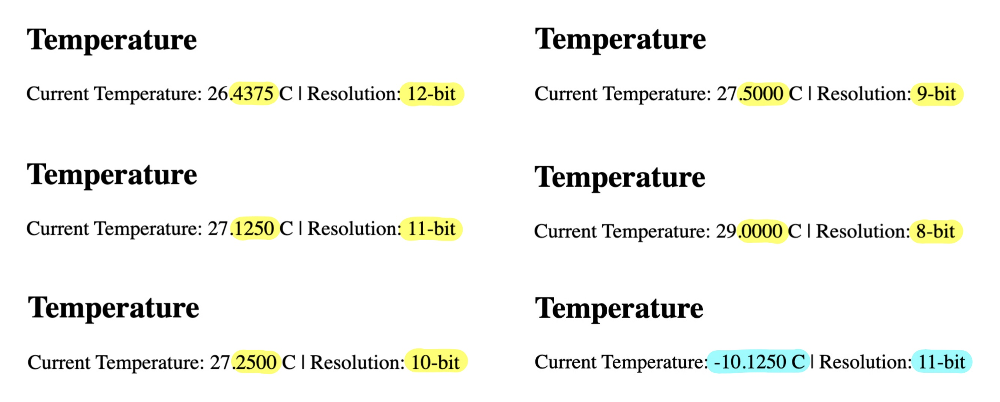
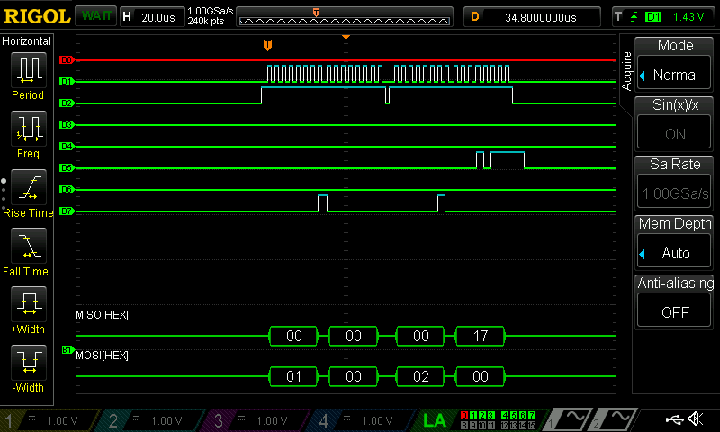
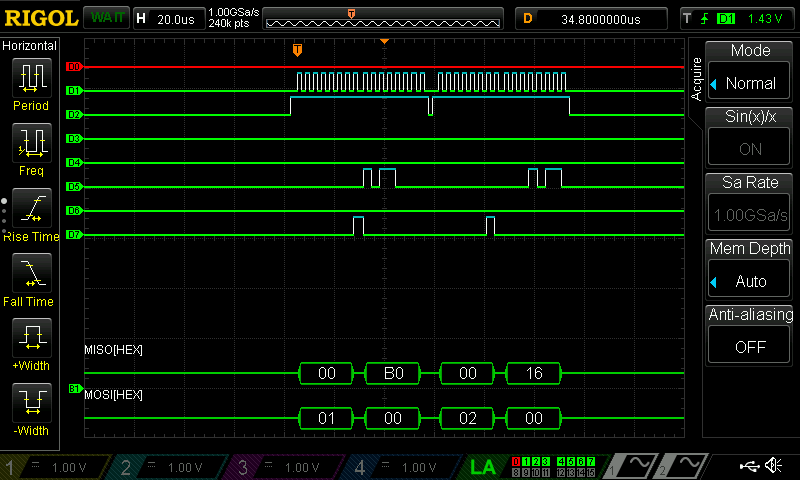

Lab 6: IoT & SPI
Sebastian Heredia | dheredia@g.hmc.edu | October 22, 2025
Introduction
In this lab, an Internet of Things (IoT) device was designed and implemented using the STM32L432KC MCU interfaced with a DS1722 digital temperature sensor over serial peripheral interface (SPI) and an ESP8266 WiFi module via USART. The purpose of the IoT device was to generate a webpage that displayed real-time ambient temperature readings (ºC) of the lab room, while allowing users to toggle an LED and select temperature resolution.
Background & Lab Overview
This lab demonstrated an Internet of Things (IoT) system that integrates sensor measurements, microcontroller processing, and web-based user interaction using the hardware setup shown in Figure 1 below. The term “Internet of Things” refers to a network of physical devices connected through the internet that can collect, share, and carry out actions based on data. Some of most familiar examples of IoT devices include smart thermostats and kitchen appliances, fitness-tracking watches, self-driving cars, and home security systems. IoT systems are becoming more and more common in daily life as they can communicate with one another or with cloud servers to enable remote monitoring, automation, and control. Figure 2 shows the HTML webpage user interface for this lab. Through this webpage, users were able to remotely monitor the live temperature and toggle the LED connected to the MCU, highlighting the two-way interaction between the hardware and the internet.

Figure 1: Layout of the MCU, ESP8266, and DS1722.
Figure 2: HTML webpage hosted by the ESP8266.
Methods & Designs
This lab consisted of three main components: 1) SPI communication with the DS1722 temperature sensor, 2) USART communication with the ESP8266 module, and 3) Dynamic webpage generation on the MCU.
SPI Interface
In this implementation, the MCU interfaced with a DS1722 digital thermometer via the Serial Peripheral Interface (SPI) protocol, using the Chip Enable (CE), Serial Clock (SCK), Serial Data In (SDI), and Serial Data Out (SDO) lines to retrieve temperature data in real-time. While the DS1722 can support both SPI and 3-wire communication modes, only the SPI protocol which is configured for 8-bit transfer was used. To read temperature data, the MCU wrote to the LSB (0x01) and MSB (0x02) temperature resgisters, then concatenated their outputs into a 16-bit value representing the current temperature.
Since the DS1722 encodes temperature data as two’s complement values, the MCU converted the binary result into a signed decimal temperature value in ºC. The precision of the reading depended on the sensor’s configutaion register which could be set for 8, 9, 10, 11, of 12-bit resolutions. Table 1 below shows the corresponding temperature resolutions in decimal format. To configure the resolution, the MCU first called the write address (0x80) of the sensor followed by an 8-bit hexadecimal control word to indicate the desired resolution. In this lab, the variable configStatus contained the control word.
Table 1: The relationship between nominal bit resolution, configStatus, and temperature resolution.
| Nominal Bit Resolution | configStatus |
Temperature Resolution (ºC) |
|---|---|---|
| 8-bit | 0xE0 |
X.0000 |
| 9-bit | 0xE2 |
X.5000 |
| 10-bit | 0xE4 |
X.2500 |
| 12-bit | 0xE8 |
X.0625 |
USART Interface
The MCU and ESP8266 communicated over a 125000 baud USART link with crossed TX/RX lines. This means the ESP8266 TX connected to RX/PA10 of the MCU and the RX connected to the TX/PA9, per the MCU pinout and ESP8266 datasheet. User requests were transmitted from the ESP8266 in the format /REQ:'<command>'\n. The MCU parsed these requests to toggle an external LED on PB7/D4 and update temperature reading each time the webpage was refreshed. After processing a request, the MCU transmitted the complete HTML page to the ESP8266, which then served it to the user’s web browser. Notably, USART starter code was provided.
Webpage Generation
The HTML webpage was dynamically generated by the MCU and included buttons for toggling the LED as well as a display of the current temperature reading with the status of the bit resolution. Importabtly, the webpage started with <!DOCTYPE html> and ended with </html> to comply with standard HTML formatting. Moreover, the webpage was updated every time the MCU processed a new USART request, so the page refreshed after every user input. Notably, HTML stater code was provided.
Technical Documentation
Schematic
The MCU, DS1722, and ESP8266 were powered using 3.3 V supplies and an external green LED wired to PB7/D4 was used to avoid conflicts with multi-function pins. Moreover, a 330Ω resistor was used to limit the current through the green LED while ensuring sufficient brightness.
 Figure 3: Lab 6 schematic outlining wiring of the MCU, DS1722, ESP8266, and an external green LED.
Results & Discussion
The final implementation successfully measured temperatures from –10 °C to 30 °C, updated the displayed value upon refresh, and correctly toggled the LED state. Figure 4 shows the changes in resolution for increasing temperature as well as a temperature reading when MSB = 0xF5 and LSB = 0xE0 which should produce a temperature of -10.125ºC according to the DS1722 datasheet. To confirm correct SPI communication, the oscilloscope’s logic analyzer was configured to monitor the SCK, CE, MOSI, and MISO lines. As shown in Figure 5 and Figure 6, proper SPI operation was observed: The chip enable (CE) line on D4 went low during each transaction, clock pulses appeared only while CE was active, and the LSB and MSB temperature registers were transmitted over MOSI while corresponding data was received on MISO. This verified that the master and sensor were communicating in sync and exchanging valid data.
 Figure 4: Temperatures are accurately be captured for -10ºC to 30ºC and bit resolutions are accurate.
 Figure 5: Logic analyzer trace for 8-bit temperature resolution configStatus = 0xE0.
 Figure 6: Logic analyzer trace for 12-bit temperature resolution configStatus = 0xE8.
Conclusion & Demo
All designs were successfully implemented. The lab took 16 hours to complete.
This lab successfully built an IoT system that used SPI and USART to read temperature from a DS1722 and control an LED through a webpage. Getting accurate temperature readings required careful sensor configuration and timing, and generating the webpage on the MCU let users interact with the hardware in real time via the ESP8266. Watching the SPI lines on a logic analyzer made it clear how important proper communication and debugging are. Overall, this project really showed how IoT can connect physical devices to the internet, making it possible to monitor and control hardware remotely, and reinforced how precise configuration and reliable protocols are key for responsive embedded systems.
AI Prototype
The purpose of the AI Prototype is to experiment with usign AI as a coding assistant to navigate memory maps and guide the configuration of various peripherals. The following prompt was entered to ChatGPT 5.0.
I’m making a web portal to interface with a temperature sensor. Create a HTML page that looks good and is intuitive to show the temperature, control an LED, and change the precision of the readout.
The LLM was able to quickly produce HTML code however, the code did not compile properly in Segger and was unable to display after multiple re-prompts. A lot of the errors were syntactical, as the LLM called temperature functions that did not exist.
Write me a C function to carry out a SPI transaction to retrieve a temperature reading from a DS1722 sensor. Make use of CMSIS libraries for the STM32L432KC.
Similar to the first prompt, the LLM quickly produced code. However, since the variable names did not quite match with the original names, the code was unable to compile. Inspecting the code, the logic appeared to be sound since the scale factor and two’s compliment features were correctly accounted for in temperature calculations. Additionally, pin assingments did not match my hardware and thre were duplicates of pins defined in the macros of other modules in the project. Overall, the combination of misaligned variables and hardware led to the LLM code not being usable to produce a front-end webpage.